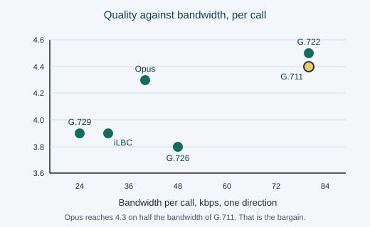

What a call actually costs on the wire
A codec vendor quotes you the audio bitrate. The network charges you for the packets. G.729 advertises 8 kbps and consumes 24, because every 20 milliseconds it wraps twenty bytes of audio in forty bytes of headers. Below is the honest number for each one.
Bandwidth for the whole trunk
Set how many calls run at once and the table recalculates. The figures count both directions, because a conversation is two streams.
| Codec | Per call | Whole trunk | Quality (MOS) | Licence |
|---|
Choosing between them
Quality is not linear with bandwidth
MOS, the Mean Opinion Score, is what you get when you sit people in a room and ask them to rate a call from one to five. It tops out near 4.5 because even a perfect digital call through a telephone handset does not sound like standing in the room together.
The useful part is the shape. G.711 scores 4.4 at 80 kbps. G.729 scores 3.9 at 24 kbps. You gave up a third of a point and saved seventy percent of the bandwidth. For most offices that trade is obviously worth taking, which is why G.729 refuses to die.
Where it stops being worth it is music on hold, fax, and anyone calling from a noisy place. Compression assumes a human voice; feed it something else and it produces noise.

The forty bytes nobody mentions
Every packet carries an IP header of 20 bytes, a UDP header of 8, and an RTP header of 12. That is 40 bytes of addressing wrapped around each slice of audio, fifty times a second. On G.711 those headers add 25 percent. On G.729, where the audio slice is only 20 bytes, the headers are twice the size of the thing they are carrying – the overhead triples the cost of the codec.
This is why the saving from switching to a compressed codec is always less than the codec bitrates suggest, and why techniques that bundle several calls into one packet exist at all. If your carrier quotes bandwidth using the raw codec rate, the quote is wrong by the amount in the table above.